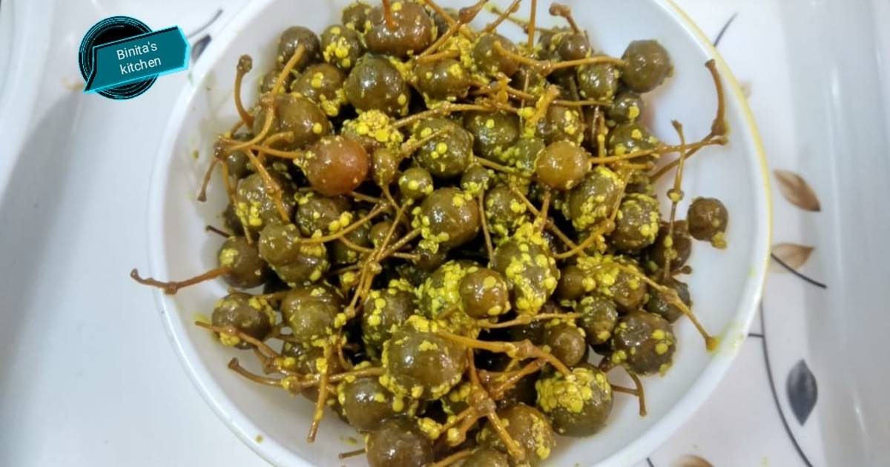

kerda nu athanu

Equipment
- 1 earthen vessel
- 1 pan
- 1 mixer
Ingredients
- ½ Kg Ker
- 500 m. L. Sour curd / buttermilk
- Water as needed
- 4 tablespoons of rye
- 4 teaspoons of fennel
- 4 spoons of fenugreek seeds
- 1-2 tbsp Kalonji
- 2 teaspoons of turmeric
- 4-5 tsp red chilli powder
- 1 teaspoon asafoetida
- 500-700 m. L. Oil
- Salt to taste
Instructions
- To make keram pickle, first clean the keram and separate the waste and bad seeds in it, then wash it with three or four water and put it in a charni to remove the excess water.
- Now take an earthen vessel, add enough water to submerge the cleaned curd and sour curd/ buttermilk and curd and mix it properly, then add salt as per taste and mix it properly, cover it and leave it in the sun for five to seven days.
- Every morning and evening once, stir and mix the ker with a clean and black spoon. Thus, after keeping it in the sun for six days, remove the ker from the buttermilk and wash it with two or three water. Let it dry
- Heat oil in a pan on gas, when smoke comes out of the oil, turn off the gas, cool the oil to a simmer and put fenugreek seeds, rye, fennel seeds in a mixer jar, grind half the waste and keep it aside.
- Now when the oil is hot, add asafoetida and mix it, after that add grated karar and mix it well and add ground spices along with turmeric, red chilli powder, kalonji and salt as required and mix it well.
- Now allow the pickle to cool completely and when the pickle cools, fill it in a clean and empty jar and enjoy the pickle after five to seven days.